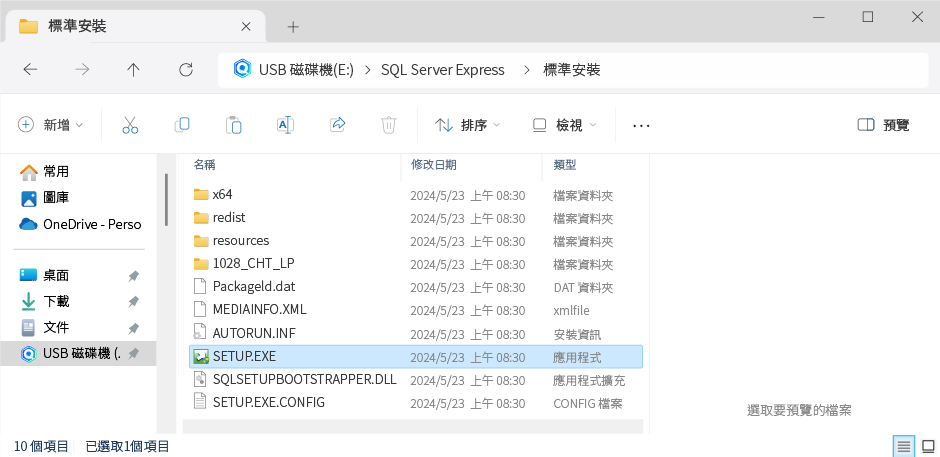

安裝資料庫引擎 / 標準安裝
注意事項
一、作業系統Windows 10，64位元以上版本適用。
二、執行安裝SQL Server前，先執行電腦的Windows Update。
三、請務必記下【執行個體名稱】。 STEP8
四、請檢查【定序】是否為『Chinese_Taiwan_Stroke_CI_AS』。 STEP15
五、設定之資料庫密碼請務必記下，未來在設定資料庫連線或是備份、還原資料時，必須使用此組密碼。 STEP16
執行安裝 SQL Server Express 2022
STEP1
點擊下方『安裝檔路徑』，複製該路徑後，打開檔案總管找尋相對應檔案進行安裝。
安裝檔路徑

STEP2
(1) 請點選「安裝」。
(2) 選擇「新增 SQL Server 獨立安裝或將功能加入到現有安裝」。
.png)
STEP3
產品更新，若電腦未接上網際網路，會顯示此錯誤訊息，點擊『下一步』即可。
.png)
STEP4
產品更新檢測完成後會出現此畫面， 點擊『下一步』即可。
.png)
.png)
STEP5
(1) 選擇『我接受授權條款和隱私權聲明』。
(2) 按下『下一步』。
.png)
STEP6
(1) 取消勾選適用於SQL Server的Azure延伸模組。
(2) 按下『下一步』。
.png)
STEP7
(1) 請勾選以下欄位。
• 資料庫引擎服務。
• SQL Server複寫。
(2) 點擊「下一步」。
.png)
STEP8
(1) 執行個體組態 ( 請務必記下此執行個體名稱 )
(2) 建立『執行個體組態』，此部分選項必需與 QBoss 主程式中『設定資料庫連線』步驟之執行個體名稱選項一致。
• 請使用『具名執行個體』 (預設為SQLExpress)。
• 若要自取一個名稱或您已重複安裝，您可自訂一個全新的執行個體名稱(開頭需為英文，限英文、數字)，
並請務必將此名稱記下，以便日後測試資料庫連線使用。
• 設定完成後，請點擊『下一步』。
.png)
STEP9
點擊SQL Server Browser 後方的『啟動類型』（選擇『自動』）。
.png)
STEP10
伺服器組態設定，點擊SQL Server Database Engine 後方的「帳戶名稱」（選擇『瀏覽』）。
.png)
STEP11
點擊『進階』。
.png)
STEP12
(1) 點擊『立即尋找』。
(2) 將卷軸拉至最底。
(3) 選擇 『SYSTEM』。
(4) 點擊『確定』。
.png)
STEP13
請確認在文字框內有『SYSTEM』字樣→點擊『確定』。
.png)
STEP14
確認文字框內所顯示之值為『 NT AUTHROITY\SYSTEM 』。
.png)
STEP15
(1) 點擊『定序
(2) 請務必確實檢查此處定序是否為『Chinese_Taiwan_Stroke_CI_AS』，若不是請點擊右方的『自訂』修改，並點擊「下一步」。
.png)
STEP16
(1) 資料庫引擎組態 (請務必記下此組資料庫密碼)。
(2) 於『驗證模式』內，選擇『混合模式』後，請自行設定一組密碼並『輸入密碼』、『確認密碼』
(3) 最後點擊『下一步』。
(4) 未來在設定資料庫連線或是備份、還原資料時，必須使用此組密碼。
.png)
STEP17
進行安裝，請耐心等候！
.png)
STEP18
請確認清單內所有項目皆被打勾後，按下『關閉』完成本次資料庫的安裝。
.png)